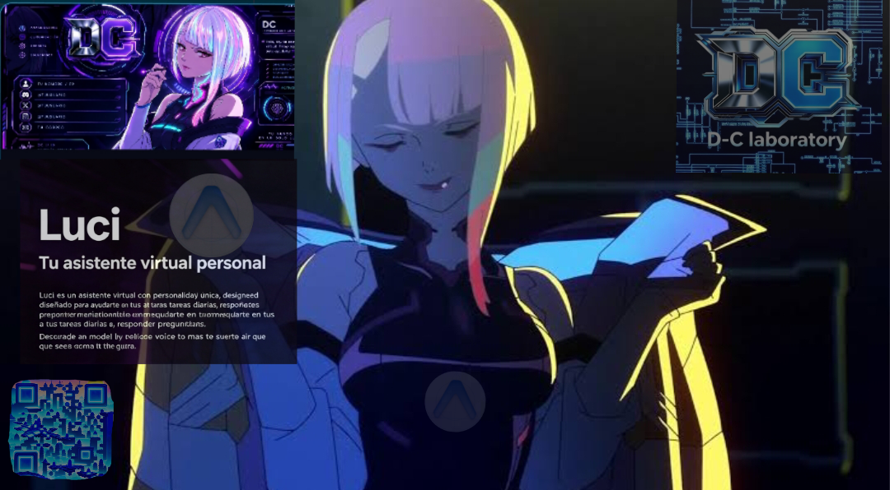

LUCY

Interfaz inteligente con Hermes híbrido, failover automático, videos emocionales y registros persistentes.
Música electrónica
Pista electrónica original creada para combinar con la interfaz de Lucy.
Autor: DC-LABORATORY · Música original de Lucy.
Descarga Lucy — Android
Descarga aquí la aplicación Lucy. APK 1.4.3-fixed.
Windows
Versión portable para Windows x64. Descarga, extrae y ejecuta Lucy-DC.exe.
Linux
AppImage para Linux x86_64.
Repositorios
Código fuente de Lucy, Android y la versión de escritorio incluida en este proyecto.